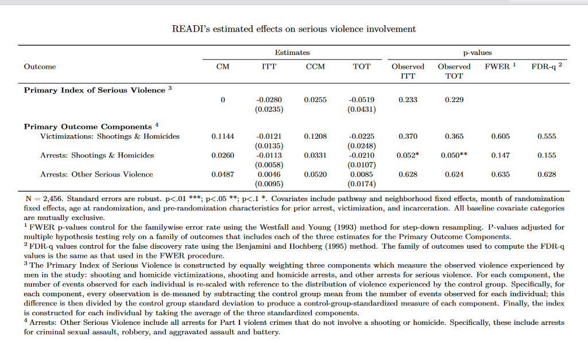
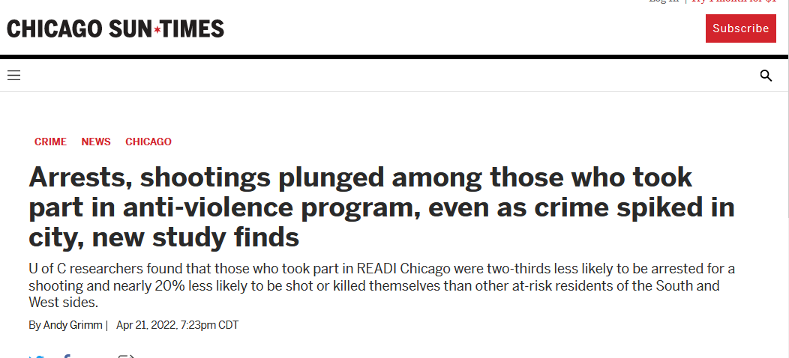
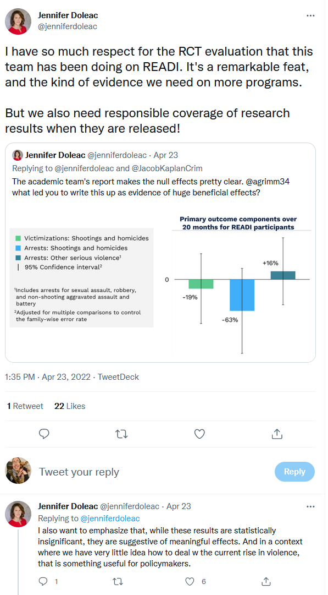
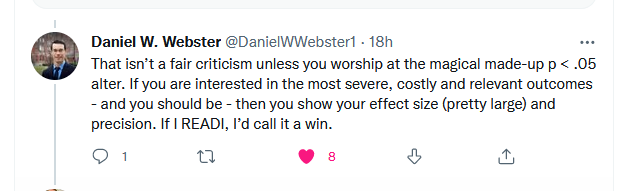
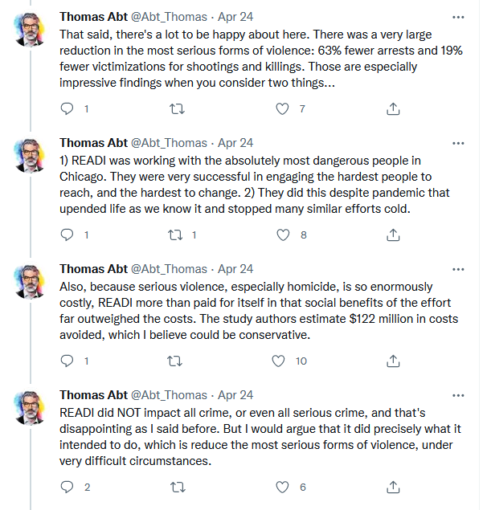
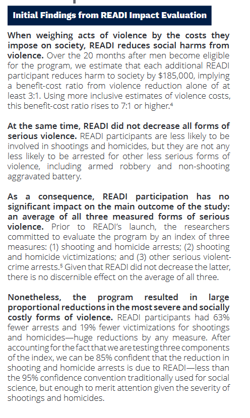
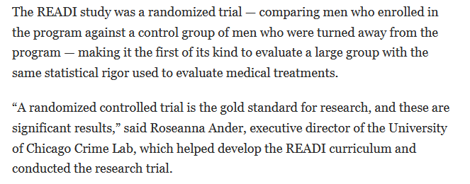

Recently the Chicago Crime Lab released a report about the effect of READI Chicago, an intervention that attempts to reduce gun violence by focusing on people at the highest likelihood of being the victim or perpetrator of such violence. Participants in this program are given an 18-month subsidized job and cognitive behavioral programming. The program costs about $60,000 per participant for a 20-month period so is a costly program. Both individual interventions have been studied and found to reduce violent offending in other populations. In their study they look at a randomized control trial (RCT) of 2,500 men who live in Chicago and were identified to be part of this super high-risk population. Since it’s an RCT some of the men were assigned to participate in READI and some were part of the control group, receiving whatever normal programs were available. This report, available here, detailed their analysis plan and findings. They looked at four outcomes: 1) shootings and homicide victimizations, 2) arrests for shootings and homicide, 3) arrests for sexual assault, robbery, and aggravated assault, and 4) an index score that sums up these individual outcomes.
What did they find? Non-significant results for every outcome, as shown in the image below. The researchers, responsibly, controlled for multiple hypothesis testing given their multiple outcomes but the findings are non-significant even without this adjustment. The observed treatment on the treated for shootings and homicide arrests has an unadjusted p-value of 0.050 meaning that it may be significant before rounding. While non-significant, the effect sizes were large for each outcome. shooting and homicide victimization decreased by 19%, arrests for shootings and homicides decreased by 63%, and arrests for the other included crimes increased by 16%.

So, large effect sizes but nothing statistically significant - though unadjusted shootings and homicide arrests may be at conventional values and even the convention of 0.05 is largely arbitrary. How did the media report on this? One article in the Chicago Sun Times provides a good example. That article declared READI a rousing success at reducing serious violence.

The article explained the findings like this:
The recently completed trial tracked some 2,500 men in Chicago’s most violent neighborhoods and found that men who participated in an intensive, 18-month program called READI Chicago were nearly two-thirds less likely to be arrested for a shooting or homicide and nearly 20% less likely to be shot or killed themselves than a similar group of men that weren’t in the program. Those are all significant declines considering a third of participants had been shot at least once before enrolling, and had an average of 17 arrests on their rap sheet. (emphasis added)
The author, Andy Grimm, discussed the positive results - the decreases in victimizations and for shootings and homicide arrests - and called them significant declines. He interviewed multiple researchers on the study team.1 He did not discuss the increase on other serious violent crime arrests, which was also not statistically significant.
I posted a tweet about this, showing the difference between the glowing article and the actually non-significant findings and more nuanced writing in the study.2 Criminal justice reform activists treated the study much the same way as the news article: that it was great evidence of the effectiveness of this policy. The academics on Twitter took the standard approach when reporters misunderstand research and think the results are much better (and much stronger) than they actually are. They argued that the researchers were appropriate in their study explaining what was and was not a significant effect and it was primary the fault of the reporter. They also found the results much more promising than I did and argued that the large effect size and marginally significant result for the shootings and homicide arrest outcome should be emphasized. See below for a few examples of these tweets - and I include them as useful examples, not trying to call out these people specifically.3



In other words, the article was wrong because it was too optimistic about the findings. But the findings are also pretty much right anyway.
It’s fair to criticize the author of this news article. He wrote it so it is his and his newspaper’s responsibility to make sure it is accurate. But the fault, I think, also lies in what I call Press Release Research.
Press Release Research is when a research study is done and then presented to the public in a way that it reads like a press release. Everything included may be technically correct, but it is the rosiest way of presenting the results. They’re usually much shorter than the actual research and focus on results rather than methods or limitations. The popular results (most significant, most politically accepted, etc.) are played up while the inconvenient results (non-significant or not politically accepted) are minimized. While this is no excuse for bad reporting, these kinds of reports make it easy for someone who isn’t well-versed in research, data, and statistics, and who doesn’t read the original report thoroughly, to believe that the findings are better and stronger than they actually are. This includes the actual press releases by schools about the papers published by researchers who work there or the common tweet threads of working papers. These are probably the most common forms but not the one I’ll focus on. Instead there are two other, more problematic, forms of Press Release Research.
The first is when authors of working papers write op-eds about their paper (see, for example, this op-ed). By necessity op-eds are short and simplistic. This means that much of the nuance and limitations - and most research is little more than nuance and limitations - is lost. So a study that gave certain results but must be taken with a grain of salt, is often presented much stronger than it is. In most cases these op-eds are written about working papers, not published ones. There’s a danger to this both in terms of publicizing work that may have substantial issues uncovered by peer review and in the integrity of research overall. Part of the integrity of research is that people know that when research is published it needs to go through a peer review process. While this is a lower standard of quality assurance than most people think, I believe it is still damaging for people to see many studies reported on that did not undergo this QA process. There is a great deal of mistrust in science without removing a barrier to publication by posting op-eds before academic publication. I think this is a bad practice but it’s less misleading that the next form of Press Release Research. Most readers of these op-eds will likely know to take the results with a grain of salt because it’s the authors of the study talking about how good their study is. So of course they will focus on the good aspects. And these articles usually include a link to the actual research study so readers could read it themselves if they would like. They probably won’t read it but at least it is there for a thoughtful (or brave, given how some articles are written) reader. I have less of a problem with authors who want to publicize their paper in the media after it has been peer reviewed. And it happens, but more rarely - see, for example Dr Brenden Beck who wrote an op-ed on his paper after it was published.4
The final type of Press Release Research is when a study is released and that looks like an academic paper but reads more like a press release. It paints the study in the best possible light. Not just in terms of doing the study well but in its impact in the world (in this case on the evaluated intervention’s ability to reduce crime). They tend to include enough data on the data and methods to lend credibility to the findings, but often not enough to understand the true scope of limitations. One test I have for whether a report is Press Release Research or not is if it gives the results of the study but not enough information to evaluate if the results are valid. These are usually shorter (the Chicago Crime Lab study is only nine pages) and better written than academic papers. Their audience is not other researchers - they don’t provide enough information to actually evaluate the study well - but instead are their funders, the public, or policy makers. For readers without statistics training they primarily paint the picture of finding important effects even when these effects are not significant. This is most common with privately funded research reports, and less common among academics who have no funding or have public funding. These are press releases under the cloak of academic rigor. Here I’ll talk about the Chicago Crime Lab’s report, but this is not unique to them.
We’ll talk about two issues: focusing on good results and downplaying inconvenient ones (which I’ve talked about a bit already) and lacking necessary information to evaluate the intervention.
Let’s consider first what the authors of the Chicago Crime Lab’s READI study actually say their results are. The second paragraphs say that READI participants are “not any less likely to be arrested for other less serious forms of violence” which is technically correct but reads to me as a null finding near zero effect rather than a large increase effect that is not significant. And in the next paragraph they say that “as a consequence” there is no significant effect in their index measure. This implies that excluding these arrests from the index would lead to significant findings for the index. That’s something that’s potentially true but not something shown in the results.

In their main results, they found marginally significant effects for shooting and homicide arrests at the conventional significance threshold without adjusting and a p-value of 0.147 or 0.155 after adjusting for multiple hypotheses (depending on how they adjusted). No other outcome was anywhere near significant, though both the study and the news report play up the findings of decreased shooting victimizations. The study repeatedly talks about being 85% confident in the shooting and homicide arrests finding, discussing the ~0.15 p-value.5 This is a good thing. The researchers choose to control for multiple tests and are sticking to their decision.
The report still has nuance to how it refers to the findings. Less so is a quote from Roseanna Ander who is the executive director of the group that conducted the study. As shown below, she says that the results are “significant”. It’s ambiguous whether she is referring to statistical significance or substantive significance (i.e. if the effect size is meaningful or not). Given that the above paragraph talks about the “same statistical rigor used to evaluate medical treatments” I believe that she is referring to statistical significance, so at best this is an unintentionally misleading quote. Even if her intent was to talk about effect sizes it is quite bad when the leader of the entire organization that is conducting a study is unclear in using a term that is of great importance to these kinds of studies. And in using a term that a the misuse of makes the findings much stronger than they actually are, and are presented in the study. Most people will never read the study, so it is crucial to be clear in what is being said about the findings.

The study also has a number of other ways to analyze the data. The first is by reweighing the elements in their index and then analyzing that result. And then by subgroups of participants based on how they were identified as potential participants (their “referral pathway”). The reweighed index score is statistically significant while one of the three referral pathways is significant for the index score, and both shooting and homicide victimizations and arrests. All other results are not statistically significant and are far from the conventional threshold. For the most part these findings are in the same direction as the main results. The significant findings are emphasized in the main text, the others are either not emphasized or only shown in the table.
This study has a pre-analysis plan. Pre-analysis plans are a report posted publicly that says what their analysis plan is before they do any analysis. The goal is to avoid p-hacking/fishing or accusations of p-hacking/fishing by only running the analyses you said you’d run before you see any of the results. While the study has a pre-analysis plan they do add an entirely new outcome: shooting and homicide arrests.6
Our initial calculations suggested that we would lack sufficient statistical power to detect effects on shooting and homicide arrests separately from arrests for other serious violent crimes. However, READI’s success in identifying men at very high risk for gun violence meant that we could divide the index into three components rather than two, to better understand READI’s effects on potentially lethal violence: (1) shooting and homicide arrests; (2) shooting and homicide victimizations; and (3) other serious violent-crime arrests.3 This finer division is a small deviation from our pre-analysis plan, and when estimating effects on the index components we adjust our testing to account for the one additional outcome being tested.
If you recall from above shooting and homicide arrests was the outcome with the largest effect size (63% decrease) and the one closest to traditional significance thresholds when not adjusting for multiple hypothesis tests. It is very convenient that the deviation from the pre-analysis plan is the best result in the study. I do think that the researchers made the right choice by adding this outcome to their analysis.7 The intervention was designed to reduce gun violence. If you could measure it then you should, even if you need to change your analysis plan. However, adding an outcome is not a “small deviation” but a major one. Treating it as a minor changed is trying to keep the benefit of having a pre-analysis plan - that your analysis strategy is unaffected by what your outcomes are - while still making major changes to what you’re actually analyzing.
The second issue is that much of the information that you would expect in an RCT evaluation is not present or is hard to find. For example, in any experiment you would include a balance table showing characteristics between the treatment and control group to demonstrate that they are basically identical except for which group they are in. No such table is included.8 You’d next want some descriptive statistics showing outcomes for each group. This is available partially as some outcomes as included in footnotes when describing the regression results, but this is not available in a single table or for all outcomes and subgroups analyzed. Finally you’d want a description of how the intervention played out in the real world, rather than how it’d work hypothetically. This is how they describe the intervention participation.
READI participants stay engaged: Despite facing considerable barriers to participating, 54% of men offered READI attended at least one day of programming. Conditional on attending at least one day of programming, READI participants also remained highly engaged, working 75% of the weeks available to them during in-person programming.
While this is a good start it is nowhere near sufficient to understand how much participation, and what the participation looked like, participants had for each element of their intervention. Describing the intervention is especially key during Covid as Covid caused major changes in employment and one of the interventions is a job. The study says that something like Covid should not change results as Covid would affect both treated and control groups equally:
Even if something unexpected occurs that affects men in both groups—a pandemic, changes in policing, or a citywide violence spike—the study can still isolate the additional impact of READI by comparing the outcomes of men in both groups.
They do not demonstrate this, however. And it is likely incorrect. Covid caused sudden and huge drops in employment early in the pandemic. As the treated group were given jobs this likely led to a loss of employment among this group. Their study, therefore, would be accurately measuring READI as it actually occurred during the time studied. No intervention works in the field as it is planned, but the intervention needs to be property described so we understand exactly what the treatment was. Even if the study found enormous and very significant effects that wouldn’t be of much use to anyone attempting to scale or replicate the intervention if they don’t know what actually happened during it.
Now, you may say I’m being unfair. That it’s only an update on the study so doesn’t need all the pieces that you’d see in an academic paper. In that case they should not present any of their findings. If the study is ready to present outcomes then it needs to present enough information to evaluate these outcomes.
Next, you may say that gun violence (especially in Chicago) is such an important topic that even suggestive evidence of a positive finding is worth presenting in the best possible light. Gun violence is an important topic and I agree that the shootings and homicide arrest result is promising though extremely noisy. It is the job of researchers to conduct objective research, not to promote certain interventions. And that means not downplaying inconvenient findings or those that weaken findings that they like.
Finally, you may say that everyone does this. That’s just how it works. You focus on the important results, not on the limitations. That this happens even in peer-reviewed academic papers. I agree, this seems to be standard. It’s still bad.
I used the Chicago Crime Lab’s READI analysis as an example in this post and that’s what it is. One example out of many. Chosen because they recently wrote an influential report. Press Release Research is a problem that is pervasive in crime research, and one that seems to be getting worse. Is there a solution? I’m not sure. There seems to be no consequences to releasing reports, like this and others, which are below normal standards of academic research. And indeed there are many benefits - publicity, funding, feeling good that your research is supporting policies that reduce crime (and I’ve never seen these kinds of reports for a bad result). In all likelihood these forms of reports, and other Press Release Research, will continue to occur, muddling our knowledge of crime and how to reduce it even more.
This article did not interview any researcher not involved with the study to give their opinion on it, relying only on the researchers who conducted the study themselves. No matter how honest a researcher is they are not a good person to evaluate their own work.↩︎
I later deleted the initial tweet but not, as some has asked, because anyone from the Chicago Crime Lab reached out to me as I’ve been told they do when someone publicly criticized them. I was not contacted by anyone affiliated with them, but maybe they’ll contact me once this is public.↩︎
And if I’m worshiping at any alter it’s not going to be anything stats related.↩︎
I am a co-author on that paper but was not involved in the op-ed.↩︎
I cannot imagine that the many academics arguing that a p-value of 0.15 is indicating of a significant finding would be as adamant if the intervention studied was policing or if the coefficient was in the opposite direction.↩︎
Earliest in the study they say that “Prior to READI’s launch, the researchers committed to evaluate the program by an index of three measures: (1) shooting and homicide arrests; (2) shooting and homicide victimizations; and (3) other serious violent-crime arrests.” So it’s not entirely clear when this change was made.↩︎
Though of course arrests for a crime are not the same as committing a crime. And no discussion was included on whether the intervention should affect the likelihood of committing the offense (based perhaps on police data or self-report surveys) rather than just being arrested.↩︎
The study says this but doesn’t not show any data: “Due to the lottery, the only difference, on average, between the men with and without a READI offer is the READI offer.”↩︎